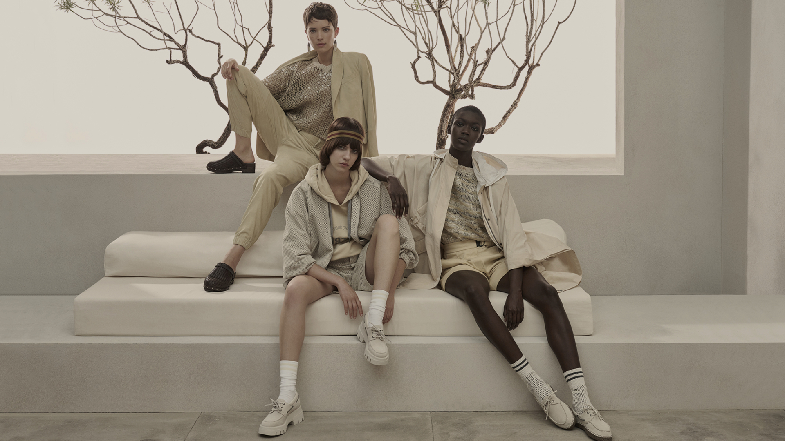
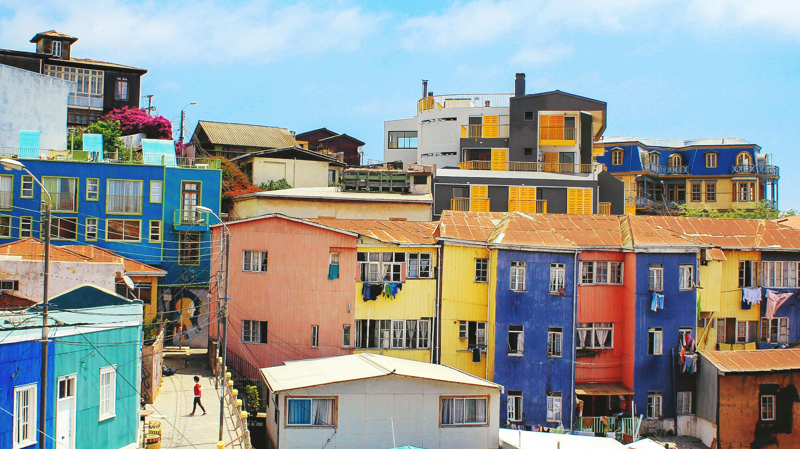
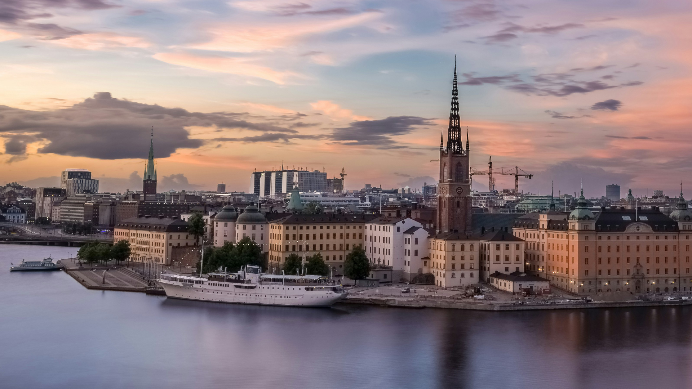
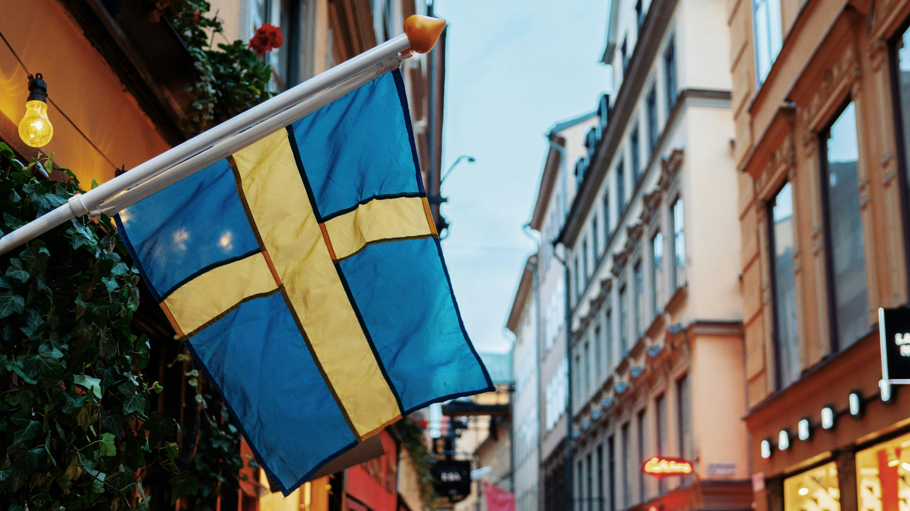

Humanistic Luxury
in Stockholm
Brunello Cucinelli is known for a philosophy of humanistic capitalism, Italian craftsmanship, and understated luxury rooted in the traditions of Solomeo. This team project explored how the house could translate those values into a distinctive Stockholm flagship, balancing local market opportunity, an unconventional retail property, immersive store design, destination-led marketing, and financial viability.
Project Scope: Market and location strategy, Property selection, Spatial and experiential design, Marketing direction, & Financial planning.
Location Analysis
From Market Opportunity to Street-Level Strategy
The project began by considering where Brunello Cucinelli’s quiet, craft-led expression of luxury could resonate beyond its existing retail network. Sweden emerged as a compelling market because of its appreciation for quality, longevity, discreet design, and considered consumption, values that align naturally with the house.

Mexico
Mexico shows strong growth momentum within fashion and luxury, with apparel and footwear standing out as dominant segments. The market is seeing a growing appetite for premium brands, supported by expanding consumer interest and ongoing retail modernization. Together, these factors make Mexico an attractive market with solid upward momentum and increasing potential for luxury retail growth.
Short Version:
Booming UHNW population, shift from logomania.

Chile
Chile shows stable retail development, supported by strong e-commerce adoption and a digitally engaged consumer base. However, growth remains modest, with CAGR estimated around 1–3%, making it a slower-growth market compared with Mexico. Overall, Chile appears steady and reliable, but not rapidly accelerating, which suggests a more measured long-term opportunity for Brunello Cucinelli.
Short Version:
Sophisticated customers, steady economic growth

Sweden
Sweden has a mature retail market characterized by slow but steady growth rather than rapid expansion. While there is no strong urgency spike in consumer demand, around 75% of shoppers still prefer physical stores, which supports the relevance of a carefully designed boutique experience. For Brunello Cucinelli, this suggests a stable market where success would depend more on long-term brand fit and retail quality than on fast growth.
Short Version:
Values sustainability, brand loyalty, and retention

Conclusion
From there, the analysis moved from country potential to the realities of Stockholm retail. Rather than treating location as a simple question of prestige or foot traffic, we examined how the surrounding neighborhood, customer profile, adjacent brands, accessibility, and character of the street could support a lasting flagship experience.
Consumer Experience
Designing the Store Journey
The spatial strategy translated Brunello Cucinelli’s restrained aesthetic into a layered retail experience. The ground floor served as a refined welcome: visually calm, immediately recognizable, and designed to draw visitors toward the larger world below. The lower level unfolded more gradually, encouraging clients to move beyond transactional shopping and spend time with the brand.
I developed the floor plans, spatial layout, experiential features, and visual renderings for the proposed store, drawing on Sweden’s propensity for minimalism and Cucinelli's monotone color palette and store-blocking patterns at other locations. Warm, natural materials and residential proportions helped preserve the house’s sense of ease, while each area served a distinct role within the customer journey, with unique elements such as the Cucinelli Archive that introduced the Swedish customer to the long-standing heritage brand.
Customer Journey Map - Ground
Customer Journey Map - Lower
“The allure of the brand is reflected in an exclusive ready-to-wear offering that expresses the entire Brunello Cucinelli universe.”
Research Analysis
My Role
I contributed to the country-level location research and took a leading role in evaluating the Stockholm street location, selecting the Artillerigatan property, and shaping the store concept. My work included the floor plans and spatial layout; the coffee corner, scent salon, VIP suites, archive, and other experiential features; and the renderings and visual design used to communicate the proposal. I collaborated with the team’s marketing lead on the broader direction and shared responsibility for the financial forecasts and break-even analysis. I also independently designed the complete process book to showcase our project in a cohesive and functional brand expression.
Short Version: Location Strategy, Property Selection, Spatial & Experience Design, Visualization, Financial Analysis, & Process Book Design
Conclusion
Reflect the Stockholm lifestyle, climate, and aesthetic
The final proposal reimagined an unconventional Stockholm property as an intimate, experience-led Brunello Cucinelli flagship. By treating its off-main-street position and expansive lower floor as design opportunities, the concept created a destination shaped by hospitality, storytelling, private clienteling, and quiet discovery, while grounding the vision in location research and financial planning, earning us the top grade in the class for our final concept.